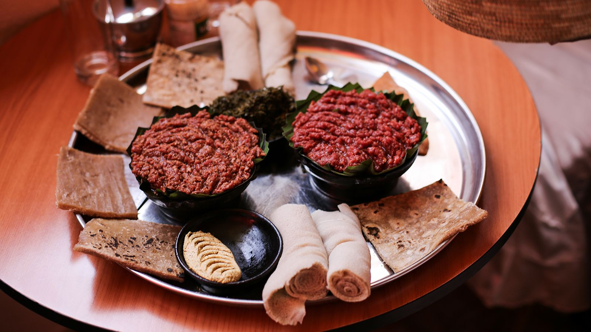

✦ Must-Try Dishes
Our Signature Plates
Traditional recipes passed down through generations — bold in spice, rich in culture, and made fresh every day.

Signature
Doro Wat
Ethiopia's national dish — chicken slow-braised in rich berbere sauce with hard-boiled eggs, served on fresh injera.
$18

PopularSpicy
Beef Tibs
Tender beef cubes sautéed with onions, tomatoes, jalapeño, mitmita and rosemary. Full of bold, smoky flavour.
$19

VeganPopular
Misir Wat
Red split lentils simmered low and slow in berbere sauce with onion and garlic. Deeply comforting and flavourful.
$14

VeganChef's Pick
Vegetarian Combo
A beautiful spread of misir, gomen, atakilt and shiro on fresh injera. The perfect way to discover Ethiopian cuisine.
$16

Signature
Kitfo
Minced lean beef marinated in mitmita spice and niter kibbeh. A celebrated Eritrean and Ethiopian delicacy.
$20

Vegan
Shiro Wat
Silky chickpea flour stew cooked with berbere and spiced butter — a beloved Eritrean everyday comfort dish.
$13